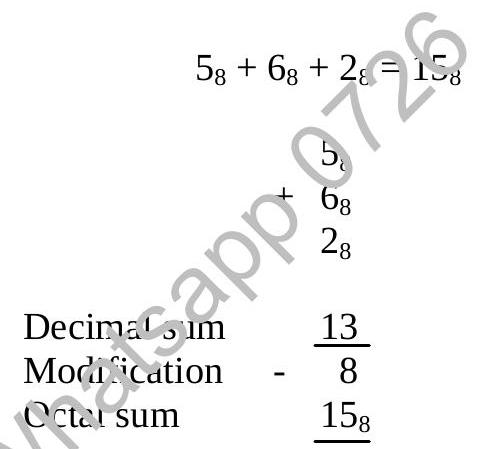

Chapter 1 : Number Bases (Continued)
1.9 Octal Arithmetic
We only cover octal addition. The sum of two octal numbers can be reduced by the usual addition algorithm to the repeated addition of two digits (with possibly a carry of 1). The following table shows the addition of Octal number.
| ++ | 0 | 1 | 2 | 3 | 4 | 5 | 6 | 7 |
|---|---|---|---|---|---|---|---|---|
| 0 | 0 | 1 | 2 | 3 | 4 | 5 | 6 | 7 |
| 1 | 1 | 2 | 3 | 4 | 5 | 6 | 7 | 10 |
| 2 | 2 | 3 | 4 | 5 | 6 | 7 | 10 | 11 |
| 3 | 3 | 4 | 5 | 6 | 7 | 10 | 11 | 12 |
| 4 | 4 | 5 | 6 | 7 | 10 | 11 | 12 | 13 |
| 5 | 5 | 6 | 7 | 10 | 11 | 12 | 13 | 14 |
| 6 | 6 | 7 | 10 | 11 | 12 | 13 | 14 | 15 |
| 7 | 7 | 10 | 11 | 12 | 13 | 14 | 15 | 16 |
The sum of two octal digits, or the sum of two octal digits plus 1, can be obtained by:
- Finding their decimal sum; and
- Modifying the decimal, if it exceeds 7, subtracting 8 and carrying 1 to the next column.
Example:
1.10 Hexadecimal Arithmetic
As with the octal system, we cover only hexadecimal addition.
The sum of two hexadecimal digits, or the sum of two hexadecimal digits plus 1, can be obtained by:
- Finding their decimal sum; and
- Modifying the decimal, if it exceeds 15, by subtracting 16 and carrying 1 to the next column.
If the base exceeds ten, we need mentally to change each hexadecimal letter digit to its decimal form when finding the decimal sum, and each decimal difference greater than nine to its hexadecimal form when modifying the decimal sum.
1. $A=10 \quad B=11 \quad C=12 \quad D=13 \quad E=14 \quad F=15$
Example:
| $\mathrm{A}_{16}$ | |
| + | $9_{16}$ |
| Decimal sum | 19 |
| Modification | - 16 (carry 1) |
| Hex sum | $13_{16}$ |
1.11 Modular Arithmetic
In our daily life, there are many counting/measuring systems around us. We know that 100 cm is not the same as 100 inches. It's because the measuring units are different, however, we do not intend to cover the conversions of this kind.
To demonstrate how modular arithmetic works is to give a test first:
"If Peter starts work at 8 o'clock in the morning and works for 8 hours, at what time will Peter finish work?"
4 o'clock in the afternoon, right? But how you worked that one out? Because the clock only has 12 hours, once the shorthand reaches 12, it will restart from 0. The numbers we see on the clock-face must be less than or equal to 12. This is a finite set or finite arithmetics.
To show it mathematically, we add 8 hours to 8 o'clock, and divide 16 by the modulus number 12, the remainder will be the answer we want.
| $8+8$ | 16 |
| $(16)_{\bmod 12}$ | 4 |
Example:
$(11+3+7+9)_{\bmod 12}$
| $30 / 12$ | = | 2 remainder 6 |
| $30 \bmod_{12}$ | = | 6 |
Points to Remember
The various sets of numbers include:
- Natural numbers
- Integers
- Rational numbers
- Irrational numbers
- Real numbers
- Complex numbers
The higher the precision required the longer the processing time in computer systems.
4 number systems
- Decimal (Denary)
- Binary
- Octal
- Hexadecimal
Addition of Octal and Hexadecimal
Convert from other base to decimal integer
- Write down the weight of each digit;
- Multiply each weight and each digit;
- Take the sum of the product.
Convert from decimal integer to other bases
- Divide the decimal integer by the desired base;
- Write down the remainder;
- Repeat dividing until a quotient 0;
- Read the remainders from bottom upwards.
Octal and hexadecimal numbers are used as a shorthand for binary numbers.
Each octal digit can be expressed as 3 binary digits
Each hexadecimal digit can be expressed as 4 binary digits.
Use modular arithmetic when the data is finite.
1.12 Past Year Questions
Express the number $7.7_{8}$ in:
- Binary
- Denary
- Hexadecimal
Convert showing all working;
- 21.625 denary to binary [ 1]
- 2AE hexadecimal to denary [1]
- 16.62 octal to binary [ 1]
- 567 octal to binary [ 1]
- 684 denary to hexadecimal [ 1]
Convert the following:
- 157 denary to binary
- 1100110101 binary to octal ..... [1]
- ACD hexadecimal to denary ..... [1]
- 2464 octal to hexadecimal ..... [1]
Convert the following:
- 101101101 Binary to Octal ..... [1]
- DAB Hexadecimal to Denary ..... [1]
- 2839 Denary to Hexadecimal ..... [1]
- 7453 Octal to Hexadecimal ..... [1]
Express the denary number 567:
- in binary[1]
- in hexadecimal ..... [1]
Express the number $103_{8}$:
- in binary
- hexadecimal
Convert:
- 274 Octal to DENARY [ 1]
- DA3 Hexadecimal to OCTAL
1. Convert:
- ABC Hexadecimal to OCTAL
- 3974 Denary to HEXADECIMAL [ 1]
2. Convert:
- 7456 Octal to HEXADECIMAL [ 1]
- 9E7 Hexadecimal to DENARY [1]
3. Convert:
- 8543 Denary to OCTAL [ 1]
- 9AD Hexadecimal to OCTAL
4. Convert:
- A25 HEXADECIMAL to BINARY [ 1]
- 549 DENARY to OCTAL [ 1]
- 3527 OCTAL to HEXADECIMAL
Convert:
- 5391 Denary to HEXADECIMAL
- 6A5 Hexadecimal to OCTAL
Convert:
- 5743 Denary to HEXADECIMAL
- ABC Hexadecimal to OCTAL
Convert the following: (You MUST show all workings.)
- $11010010_{2}$ to Hexadecimal [ 2 ]
- $54A_{16}$ to Denary [2]
- $1017_{8}$ to Binary [2 ]
- $167_{10}$ to Binary
Convert the following:
- $175264_{8}$ to base 16
- $1101_{10}$ to base 16
- $72_{8} \div 2_{8}$ to base 10 [2]
- $B00_{16} + 1F_{16}$ to base 2 [2]
- Express the number $21_{10}$ in binary [1]
- Express the number $46_{10}$ in binary [1]
- Express the number $92_{10}$ in binary [1]
- Express in binary the result of multiplying $100110111_{2}$ by $4_{10}$ [ 2 ]
Convert the following:
- $357_{8}$ to base 16 [ 2 ]
- $1011_{10}$ to base 16 [ 2 ]
- $504_{8} \div 2_{8}$ to base 10 [ 2 ]
- $6A_{16} + D00_{16}$ to base 2 [2 ]
What is the BASE of the number system where $36 + 27 = 65$?
By converting to BINARY, evaluate the HEXADECIMAL expression: 7B + EA. Give your answer in HEXADECIMAL.
- Evaluate $(7 * 4 + 6 * 5)_{\bmod 11}$
- Solve $(3 * p = 8)_{\bmod 11}$
- Evaluate $(7 * 3 + 5 * 2 + 2 * 1) \bmod 11$
- Evaluate $(3 * p)_{\bmod 5}$ for p=0, 2 and 4
- Solve $(3p = 7) \bmod 11$ [2]
Evaluate $((4 * 6) + (35 \text{ DIV } 4)) \text{ MOD } 11$ [3]